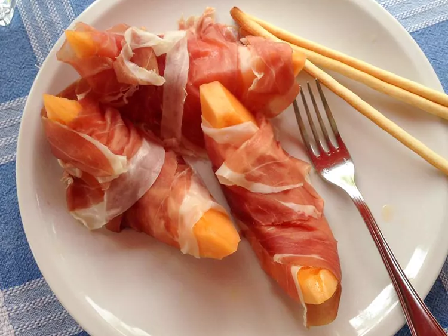

Prosciutto e Melone (Italian Ham and Melon)

Description
Easy to make and incredibly delicious!
Ingredients
- 1 cantaloupe - seeded and cut into 8 wedges
- 8 thin slices prosciutto
Steps
- Step 1: Remove the flesh from the rind of the cantaloupe; wrap each piece of cantaloupe with a slice of prosciutto. Arrange on a platter and serve cold.
Home